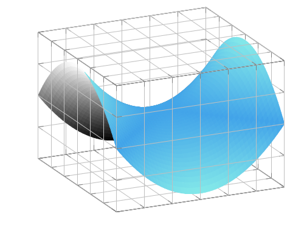

Reduced Order modeling and Autoencoders
Reduced order modeling is a data-driven technique that exploits the structure of parametric PDEs to make solving those PDEs easier.
Consider a parametric PDE written in the form: $F(z(\mu);\mu)=0$ where $z(\mu)$ evolves on a infinite-dimensional Hilbert space $V$.
In modeling any PDE we have to choose a discretization (particle discretization, finite element method, ...) of $V$, which will be denoted by $V_h$.
Solution manifold
To any parametric PDE we associate a solution manifold:
\[\mathcal{M} = \{z(\mu):F(z(\mu);\mu)=0, \mu\in\mathbb{P}\}.\]

In the image above a 2-dimensional solution manifold is visualized as a sub-manifold in 3-dimensional space. In general the embedding space is an infinite-dimensional function space.
As an example of this consider the 1-dimensional wave equation:
\[\partial_{tt}^2q(t,\xi;\mu) = \mu^2\partial_{\xi\xi}^2q(t,\xi;\mu)\text{ on }I\times\Omega,\]
where $I = (0,1)$ and $\Omega=(-1/2,1/2)$. As initial condition for the first derivative we have $\partial_tq(0,\xi;\mu) = -\mu\partial_\xi{}q_0(\xi;\mu)$ and furthermore $q(t,\xi;\mu)=0$ on the boundary (i.e. $\xi\in\{-1/2,1/2\}$).
The solution manifold is a 1-dimensional submanifold:
\[\mathcal{M} = \{(t, \xi)\mapsto{}q(t,\xi;\mu)=q_0(\xi-\mu{}t;\mu):\mu\in\mathbb{P}\subset\mathbb{R}\}.\]
If we provide an initial condition $u_0$, a parameter instance $\mu$ and a time $t$, then $\xi\mapsto{}q(t,\xi;\mu)$ will be the momentary solution. If we consider the time evolution of $q(t,\xi;\mu)$, then it evolves on a two-dimensional submanifold $\bar{\mathcal{M}} := \{\xi\mapsto{}q(t,\xi;\mu):t\in{}I,\mu\in\mathbb{P}\}$.
General workflow
In reduced order modeling we aim to construct a mapping to a space that is close to this solution manifold. This is done through the following steps:
Discretize the PDE.
Solve the discretized PDE for a certain set of parameter instances $\mu\in\mathbb{P}$.
Build a reduced basis with the data obtained from having solved the discretized PDE. This step consists of finding two mappings: the reduction $\mathcal{P}$ and the reconstruction $\mathcal{R}$.
The third step can be done with various machine learning (ML) techniques. Traditionally the most popular of these has been Proper orthogonal decomposition (POD), but in recent years autoencoders have also become a popular alternative (see (Fresca et al, 2021)).
References
- [18]
- S. Fresca, L. Dede’ and A. Manzoni. A comprehensive deep learning-based approach to reduced order modeling of nonlinear time-dependent parametrized PDEs. Journal of Scientific Computing 87, 1–36 (2021).